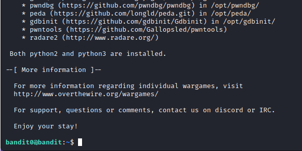
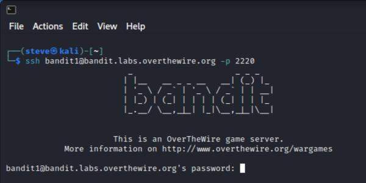
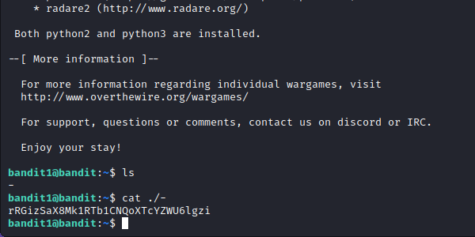
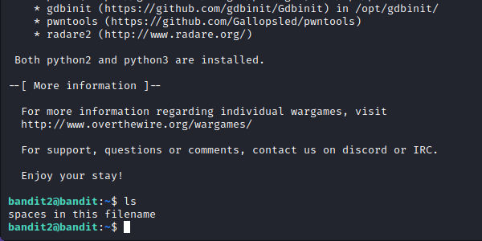
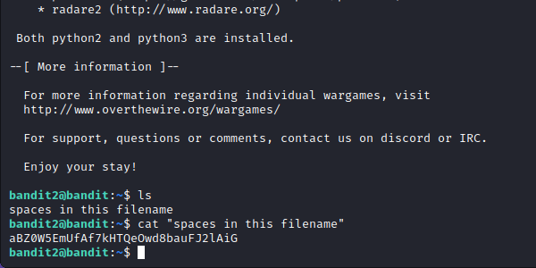
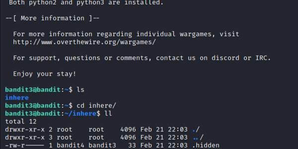
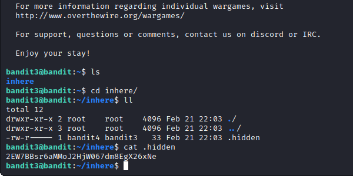
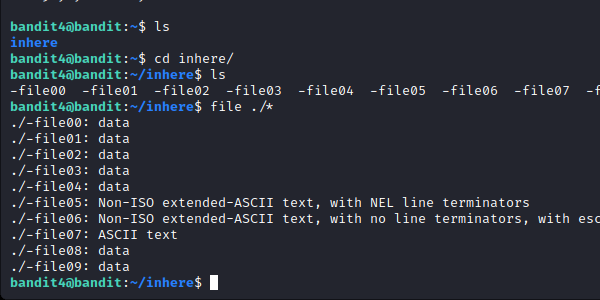
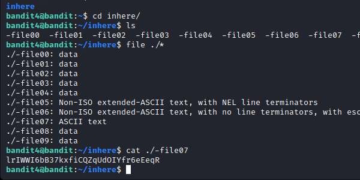

Natas Le
OverTheWire Bandit
/Steven Song
OverTheWire: Bandit 15→19
Bandit Level 15 → 16:
Level Goal: The password for the next level can be retrieved by submitting the password of
the current level to port 30001 on localhost using SSL encryption.
Writeup:
Establish a connection to the bandit15 machine. According to the level goal, we need to establish an
SSL connection to the localhost on port 30001. Read the manual for openssl with the command, "man
openssl".

Following the shown syntax, establish an SSL connection through the command, "openssl s_client
localhost:30001". With this command, we establish a secure SSL connection with "s_client" that
instructs openssl to act as a client and initiate a connection to a remote server. "Localhost" is
the server address we wish to connect to and "30001" is the port.

Like in the last challenge, we need to paste and enter the password to this current level for the
next level's password.
Bandit Level 16 → 17:
Level Goal: The credentials for the next level can be retrieved by submitting the password of
the current level to a port on localhost in the range 31000 to 32000. First find out which of these
ports have a server listening on them. Then find out which of those speak SSL and which don’t. There
is only 1 server that will give the next credentials, the others will simply send back to you
whatever you send to it.
Writeup: SSH into server bandit16, this time, we need to scan ports 31000 to 32000 to find
out which ports in this range has a server listening on them. To do this, we can use nmap. Using the
command "nmap localhost -p 31000-32000", we can scan the localhost from the given range to see which
server will ping back.

Next, as the level goal suggests, we need to find out which of these servers speaks SSL and which
don't. Once again, use openssl to establish a connection with localhost on each port until one
responds. Use the command "openssl s_client localhost:(port)".

Once we have established connection to the correct port, we are given an RSA private key. This is
most likely our encrypted password. We can use it to log into the next level. Exit the machine,
create a text file with the copied RSA text. Use the command "nano key.txt", we can use this file to
log into our next machine.
Using the command "ssh bandit17@bandit.labs.overthewire.org -i key.txt -p 2220" we can attempt to
connect to the server with the key in our text file on port 2220. Upon doing so we get an error that
states, "It is required that your private key files are NOT accessible by others."

Doing some research into the chmod command, we can use the code 700 so only the owner can read,
write to, or execute the text file. Use the command, "chmod 700 key.txt" to change its permissions.
Now again, try to establish a new ssh connection with our file.

Bandit Level 17 → 18:
Level Goal: There are 2 files in the homedirectory: passwords.old and passwords.new. The
password for the next level is in passwords.new and is the only line that has been changed between
passwords.old and passwords.new
Writeup: As stated in the level goal, we have two files in the home directory. Since our
password is the only differing string in both passwords.new and passwords.old we need to somehow
find this difference.

Upon further research, we can use the "diff" command to compare both text files. Use the command
"diff passwords.new passwords.old".

Since passwords.new was our first parameter, our password is the first line of output.
Bandit Level 18 → 19:
Level Goal: The password for the next level is stored in a file readme in the homedirectory.
Unfortunately, someone has modified .bashrc to log you out when you log in with SSH.
Writeup: As stated in the level goal, when trying to ssh into bandit18, we are immediately
logged out. Looking up the ".bashrc" file, it is a script that is executed when a user logs into a
server.
To my knowledge, we can't modify the .bashrc file in this situation. We need to somehow read the
readme file in the home directory. Looking at the ssh manual, notice that we can actually execute a
command in the remote host instead of the current shell (unlike the pipe).

This time, when typing the ssh command, append the "cat readme" command to concatenate the readme
file in the home directory.

Bandit Level 19 -> 20:
Level Goal: To gain access to the next level, you should use the setuid binary in the
homedirectory. Execute it without arguments to find out how to use it. The password for this level
can be found in the usual place (/etc/bandit_pass), after you have used the setuid binary.
Writeup: After successful connection to bandit19, "ls" to see a file called "bandit20-do".
For more information on the file, use the "file bandit20-do" command. We see the file is a setuid
executable. Execute the file with "./bandit20-do" and we are shown that we can run a command as
another use with the file.

Knowing that the password is located in the directory, /etc/bandit_pass/bandit20, we can cat the
bandit20 password with the executable. Use the command "./bandit20-do cat /etc/bandit_pass/bandit20"
which gives us our next password.

-


vel 0-4:
OverTheWire: Bandit 15→19
Bandit Level 15 → 16:
Level Goal: The password for the next level can be retrieved by submitting the password of
the current level to port 30001 on localhost using SSL encryption.
Writeup:
Establish a connection to the bandit15 machine. According to the level goal, we need to establish an
SSL connection to the localhost on port 30001. Read the manual for openssl with the command, "man
openssl".
Following the shown syntax, establish an SSL connection through the command, "openssl s_client
localhost:30001". With this command, we establish a secure SSL connection with "s_client" that
instructs openssl to act as a client and initiate a connection to a remote server. "Localhost" is
the server address we wish to connect to and "30001" is the port.
Like in the last challenge, we need to paste and enter the password to this current level for the
next level's password.
Bandit Level 16 → 17:
Level Goal: The credentials for the next level can be retrieved by submitting the password of
the current level to a port on localhost in the range 31000 to 32000. First find out which of these
ports have a server listening on them. Then find out which of those speak SSL and which don’t. There
is only 1 server that will give the next credentials, the others will simply send back to you
whatever you send to it.
Writeup: SSH into server bandit16, this time, we need to scan ports 31000 to 32000 to find
out which ports in this range has a server listening on them. To do this, we can use nmap. Using the
command "nmap localhost -p 31000-32000", we can scan the localhost from the given range to see which
server will ping back.
Next, as the level goal suggests, we need to find out which of these servers speaks SSL and which
don't. Once again, use openssl to establish a connection with localhost on each port until one
responds. Use the command "openssl s_client localhost:(port)".
Once we have established connection to the correct port, we are given an RSA private key. This is
most likely our encrypted password. We can use it to log into the next level. Exit the machine,
create a text file with the copied RSA text. Use the command "nano key.txt", we can use this file to
log into our next machine.
Using the command "ssh bandit17@bandit.labs.overthewire.org -i key.txt -p 2220" we can attempt to
connect to the server with the key in our text file on port 2220. Upon doing so we get an error that
states, "It is required that your private key files are NOT accessible by others."
Doing some research into the chmod command, we can use the code 700 so only the owner can read,
write to, or execute the text file. Use the command, "chmod 700 key.txt" to change its permissions.
Now again, try to establish a new ssh connection with our file.
Bandit Level 17 → 18:
Level Goal: There are 2 files in the homedirectory: passwords.old and passwords.new. The
password for the next level is in passwords.new and is the only line that has been changed between
passwords.old and passwords.new
Writeup: As stated in the level goal, we have two files in the home directory. Since our
password is the only differing string in both passwords.new and passwords.old we need to somehow
find this difference.
Upon further research, we can use the "diff" command to compare both text files. Use the command
"diff passwords.new passwords.old".
Since passwords.new was our first parameter, our password is the first line of output.
Bandit Level 18 → 19:
Level Goal: The password for the next level is stored in a file readme in the homedirectory.
Unfortunately, someone has modified .bashrc to log you out when you log in with SSH.
Writeup: As stated in the level goal, when trying to ssh into bandit18, we are immediately
logged out. Looking up the ".bashrc" file, it is a script that is executed when a user logs into a
server.
To my knowledge, we can't modify the .bashrc file in this situation. We need to somehow read the
readme file in the home directory. Looking at the ssh manual, notice that we can actually execute a
command in the remote host instead of the current shell (unlike the pipe).
This time, when typing the ssh command, append the "cat readme" command to concatenate the readme
file in the home directory.
Bandit Level 19 -> 20:
Level Goal: To gain access to the next level, you should use the setuid binary in the
homedirectory. Execute it without arguments to find out how to use it. The password for this level
can be found in the usual place (/etc/bandit_pass), after you have used the setuid binary.
Writeup: After successful connection to bandit19, "ls" to see a file called "bandit20-do".
For more information on the file, use the "file bandit20-do" command. We see the file is a setuid
executable. Execute the file with "./bandit20-do" and we are shown that we can run a command as
another use with the file.
Knowing that the password is located in the directory, /etc/bandit_pass/bandit20, we can cat the
bandit20 password with the executable. Use the command "./bandit20-do cat /etc/bandit_pass/bandit20"
which gives us our next password.
Natas Level 0:
Level Goal:
Username: natas0
Password: natas0
URL: http://natas0.natas.labs.overthewire.org
Writeup: This level seems simple enough, SSH, also known as the Secure Shell, is a network
protocol that
allows two systems to communicate with each other. To utilize SSH, you type “ssh” into your terminal
followed by a command.
To connect to the bandit 0 game, enter this command to your terminal (ssh
bandit0@bandit.labs.overthewire.org -p 2220):

This command sends a request through the ssh to log into a remote machine called
bandit.labs.overthewire.org, with the specific username “bandit0” additionally, using the –p flag to
specify the port number.
From here on, you can enter the password provided by the level.
Upon entering the password, you are flooded with a ton of information regarding the machine, but
more importantly, you’ve completed the first level in OverTheWire’s beginner wargame!

Bandit Level 0 → 1:
Level Goal: The password for the next level is stored in a file called readme located in
the home directory. Use this password to log into bandit1 using SSH. Whenever you find a password for a
level, use SSH (on port 2220) to log into that level and continue the game.
Writeup: This level requires you to traverse the machine to locate a readme file. To do
so,
type the “ls” command to list the contents of the directory you are currently in.

Upon entering the command, you can observe the readme file. From there, use the “cat” command followed by the title of the text file you wish to concatenate.
Tip: When specifying the names of files in the command line, you can press “tab” to autocomplete the title specification.

In doing so, you are given the password to the next machine! Make sure to copy this to your clipboard, or anywhere you can access again.
Bandit Level 1 → 2:
Level Goal: The password for the next level is stored in a file called - located in the
home directory
Writeup: This level builds upon the previous ones, first, we will have to log into the
bandit1 machine using the following command (ssh bandit1@bandit.labs.overthewire.org -p 2220):

Now copy the password from the previous machine, using ctrl + shift + c, unlike the standard shortcut, to copy a string of text, in the terminal, we include a shift to differentiate the shortcut from “ctrl + c” a terminal command that terminates any running program. Upon copying the password, you will now have to paste it into the password prompt using the ctrl + shift + v shortcut. Having made it into the machine, we must find the “-” file.
Using the ls command, we can see that the file is in the directory we are currently in, but as you notice, in attempting to concatenate (cat) the file, nothing happens. To access files with special characters we will need to utilize the “. /” command which uses an explicit path to the file.
And again, we get the password for the next level.

Bandit Level 2 → 3:
Level Goal: The password for the next level is stored in a file called spaces in this
filename located in the home directory
Writeup: This level, like the last, asks us to access a file named “spaces in this
filename”. Upon logging into the machine and listing its files, the file we need is directly in front of
us.

To cat this file, we will need to put the full name of the file in quotes like so:

And we are given the password for the next level!
Bandit Level 3 → 4:
Level Goal: The password for the next level is stored in a hidden file in the “inhere”
directory.
Writeup: Similar to the last, this level asks us to find a hidden file. This is easy, cd
into the “inhere” directory and use the “ls” command to list the files within the directory.
Additionally, use the "file ./*" command to search and display the files and file types in the
directory.

Now that we have revealed the hidden directory, we can cat the file with the following command:
